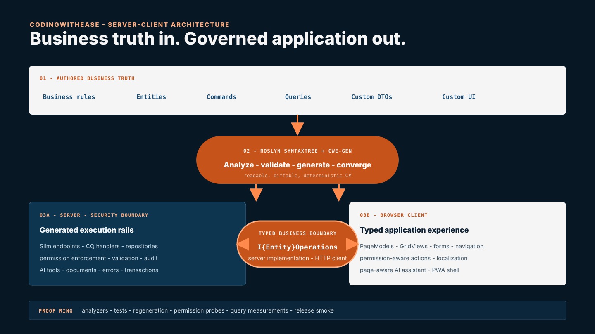

01
Human + agent authored
Business model
- Entities
- Commands
- Queries
- Custom DTOs
An engineering framework for operational business applications
CodingWithEase turns business models into secure, consistent .NET applications through explicit architecture, deterministic generation, and verification that fails loudly.
One source of business truth
CodingWithEase keeps the application focused on entities, custom commands, queries, DTOs, and business-specific screens. The repeated infrastructure becomes a generated, inspectable contract.
Human + agent authored
Explicit tool
cwe-genReads source, validates intent, emits deterministic code, then checks convergence.
Application rails
I{Entity}OperationsFramework architecture
The business model remains the source of truth. cwe-gen turns it into repeatable infrastructure and one typed operations boundary, while engineers keep ownership of business behavior and custom UI.

cwe-gen generation engineRoslyn SyntaxTree identifies types, members, and declared intentThe server is the security boundary.
I{Entity}Operations
Typed DTOs
Explicit methods
Permission-aware results
The UI maps to operations—not infrastructure.
The framework provides secure rails, analyzers, paging, caching, and diagnostics. The developer defines correct domain behavior and proves query plans, indexes, payloads, and response times against realistic data.
One system, two perspectives
Real C# files live on disk. They are greppable, debuggable, diffable, and owned by a deterministic generator—not hidden behind compiler magic.
Browser-safe contracts, server-only runtime code, provider-neutral data access, and one dependency direction are enforced as architecture—not remembered as style.
Invalid permissions, unresolved source shapes, stale generation, and composition mistakes become diagnostics before they can become expensive runtime mysteries.
Recurring patterns—identity, authorization, audit, data operations, PWA, documents, and AI integration—arrive through one governed platform.
Permissions are generated, grantable, resolved, enforced in handlers, and reflected in the UI. The hidden button is never treated as the security boundary.
The application source remains centered on the factory: its entities, decisions, workflows, commands, queries, and the screens people actually use.
Claims need enforcers
Every important promise is pushed toward executable proof. The goal is not to produce code that looks plausible; it is to make the wrong shape difficult to express and impossible to ship silently.
Content comparison, ordinal ordering, cold-start generation, orphan cleanup, and a second-run fingerprint check.
“Works on my machine” output driftDependency rules and package boundaries are checked by tests and release scripts across framework and generated consumers.
Convenient shortcuts becoming permanent couplingThe same composition rules run in Roslyn analyzers and through CheckComposition on demand.
The release ladder packs, installs tools, creates clean applications, generates twice, builds, tests, and performs a startup smoke.
A green monorepo hiding a broken packageMove failures left
Security is a complete chain
A hidden menu item improves the experience; it does not secure the data. CodingWithEase generates and carries each permission through five explicit links, with enforcement at the request handler and row-level scope as a separate axis.
Default posture
CRUD is not assumed public. Generated operations, endpoints, permission keys, and AI tools all derive from the same declared capability surface.
Data integrity
Audit values never ride the editable client model. They are stamped by the server in an ordered save pipeline.
Operations
A model fingerprint detects a database that no longer matches the application and stops a silent, wrong-schema startup.
Defense in depth
Endpoint authorization, handler checks, save-time authorization, page gates, and page-scoped AI tools reinforce the same permission model.
CodingWithEase keeps generated permission, handler, operations, and save-pipeline infrastructure outside normal agent-authored code. Developers still own permission policy, row scope, business rules, custom code, dependencies, configuration, and adversarial testing.
Review responsibilities →Two AI stories. Deliberately separate.
Instead of asking a coding agent to guess APIs from generic training data, dotnet-ai discovers capability providers from the built application. References are generated from the installed assemblies themselves.
Each generated app can expose an in-app text—and optionally voice—assistant. Its context follows the application’s real page structure, and its tools come from the same generated business operations.
// One contract. Two hosts. Same component.
@inject IEmployeeOperations Employees
// Server: direct operation
// Browser: typed HTTP operation
// Caller: does not need to knowThe interface that removes a split
Every entity gets an I{Entity}Operations contract with the correct implementation registered in each host. A component can prerender on the server and continue in the browser without rewriting its data access.
From a factory problem to a framework
The framework began with a practical question inside EMMo: how can recurring application code become faster to deliver, more consistent, and easier to trust? Each generation answered that question with evidence from the previous one.
While developing EMMo, Lucian saw that repositories, grid pages, forms, and other repeated structures could be standardized instead of rebuilt feature by feature.
The first tool read DTOs through reflection and generated repositories and UI pages with grids and forms. It established the core principle: describe business data once, then derive the repeatable application surface.
During a second bachelor’s degree in computer science, compiler studies led to an attempt at a custom syntax analyzer. Research into the problem revealed Roslyn and C# source generators.
BlazorForKids became a broad experiment in generating domain, data, and UI code inside a Blazor Server application. It moved the idea from a helper tool toward a complete development system.
The move to Blazor SSR continued through CodingWithEase V1–V4. Those trials showed that compiler-hidden source-generator output was not the best contract for debugging, reviewing, versioning, or guiding AI coding agents.
Today, cwe-gen reads real source through Roslyn SyntaxTree, resolves types and methods, validates the model, and writes readable code to disk. The generated result is inspectable, diffable, deterministic, and verified.
EMMo supplied the operational pressure. Compiler study supplied the language tools. BlazorForKids and four SSR generations supplied the experiments. CodingWithEase turns those lessons into an enforceable delivery system.
Opinionated on purpose
From framework capability to company outcome
CodingWithEase is the engineering platform behind work delivered through Elgibe Solutions. The engagement starts with the real process and business outcome, not with selling software as an isolated product.
ELGIBE SOLUTIONS · LUCIAN BUMB
Lucian works with factories and operational companies to identify bottlenecks, prioritize change, define ownership and KPIs, translate needs into requirements, and guide disciplined implementation. When a custom .NET application is the right answer, CodingWithEase makes that implementation faster and more reliable.
Find bottlenecks, duplicated work, missing traceability, and the places where digitalization can create control.
Put changes in the right order before investing in tools or automating a process that is not yet clear.
Define ownership, decision cadence, measurable outcomes, and pragmatic architecture for internal systems.
Keep process, scope, architecture, and delivery aligned—from the first operational question to a working application.
CodingWithEase
For technical teams who want to inspect the architecture—and factory leaders who need confidence in what sits behind the screen.